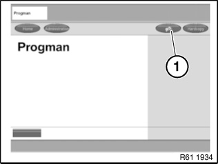

Programming and Relearning
Vehicle Programming And Coding

NOTE:
- In order to avoid incorrect programming procedures and error messages, it is essential when working with the Progman/ ISTA/P programming system always to use the latest Progman version.
- Battery voltage must not drop below 13.0 V during programming.
Connect battery charger prior to programming.
*Sourcing reference Workshop Equipment Catalogue

IMPORTANT:
E72 only:
Before programming the vehicle, it is essential to disconnect the highvoltage system from the power supply.

Programming sequence via ISTA/P:
- Identify vehicle and read out control unit data
- Draw up and configure measures plan
- Prepare programming, export CBS/CKM data
- Carry out repair measures, replace control units if necessary
- Identify vehicle again after repair. Update measures plan
- Carry out programming
- Assess programming afterwards, import CBS/CKM data
- Programming successfully completed

Programming sequence via Progman:
Select menu item (1).
Select corresponding procedure from selection list.
For example:
- Preparation and subsequent evaluation of vehicle programming
- Start a Progman session
- Sequence of BMW/MINI vehicle programming and encoding
- BMW/MINI Car & Key Memory
- BMW/MINI initializations
- BMW/MINI service functions in Progman
- ...